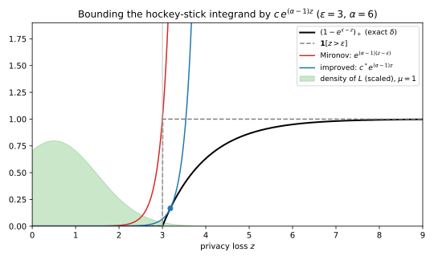
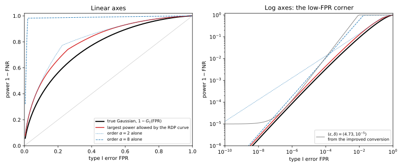
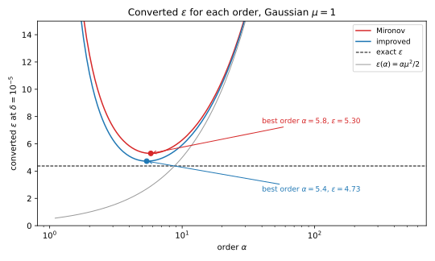

30 From Rényi DP to (ε, δ) and to tests
Privacy accountants track Rényi differential privacy (RDP), because it composes by adding curves (the previous chapter). Take two neighbouring datasets \(D \sim D'\) that differ by adding or removing your record, with \(D'\) the one that holds it. A mechanism \(M\) then produces two output distributions, \(P = M(D)\) and \(Q = M(D')\). For each order \(\alpha > 1\) the Rényi divergence \(D_\alpha(P\|Q)\) measures how far apart they are, and the RDP curve \(\varepsilon(\alpha)\) bounds it over all neighbouring pairs. But nobody reports the curve. A paper, a model card or a regulator asks for \((\varepsilon, \delta)\)-differential privacy (DP), or for a statement about attacks: how much better than guessing can a test tell whether your record was used? So every RDP analysis ends with a conversion, and the conversion decides the number you publish. This chapter asks how much the standard conversion loses and where, which \((\varepsilon, \delta)\) a curve supports at best and at which order, and what a curve says about tests.
One idea organizes the answers. The privacy loss of an output \(y\) is \(L(y) = \ln(P(y)/Q(y))\), the logarithm of how much more likely \(y\) is under \(D\) than under \(D'\). The first section recalls two facts about it. The smallest \(\delta\) at a given \(\varepsilon\) is an average of a function of the loss, while the RDP curve records only a few other averages of it, the values of its moment generating function (MGF). So a conversion asks for the largest \(\delta\) consistent with those few averages. The classic answer, Mironov’s conversion, wastes much of what the curve says, and a sharper one recovers almost all of it. The last section shows that what remains, 5 to 10% of \(\varepsilon\) for the Gaussian mechanism, belongs to the curve itself and not to any formula.
The running example is the Gaussian mechanism on a query of sensitivity 1, with noise of standard deviation \(\sigma\) (the noise multiplier), run \(k\) times. After dividing by \(\sigma\), each output shifts by \(1/\sigma\) between the two datasets, so the \(k\) outputs differ by a vector of length \(\mu = \sqrt k/\sigma\). Only the component along that vector carries evidence, so the composed mechanism is equivalent to the pair \(\mathcal N(0, 1)\) and \(\mathcal N(\mu, 1)\) (Theorem 20.3), and its RDP curve is \(\varepsilon(\alpha) = \alpha\mu^2/2\), the sum of \(k\) single-step curves \(\alpha/(2\sigma^2)\) (Rényi DP). At \(\mu = 1\), a single release at \(\sigma = 1\), the exact answer at \(\delta = 10^{-5}\) is \(\varepsilon = 4.377\) (Theorem 20.3), while Mironov’s conversion gives 5.299 and the improved one 4.729. Every number uses \(\delta = 10^{-5}\) and the part’s grid of 154 orders: 1.1 to 10.9 in steps of 0.1, every integer from 12 to 63, then 128, 256 and 512.
30.1 Where Mironov’s conversion loses
Rényi DP derived Mironov’s conversion, the one in the original moments accountant and in much older code. Before you can improve it, you need to know where it loses. This section rewrites its proof as two inequalities on the privacy loss, so that the cost of each can be measured on the Gaussian. Section D.3 in the appendices derives the same conversion from scratch, with the Gaussian’s best order in closed form.
Two results from earlier chapters turn a conversion into a statement about the loss. The first says what \(\delta\) is. For one pair of datasets, taken in the order \((D, D')\), the smallest \(\delta\) at level \(\varepsilon\) is the hockey-stick divergence, the largest value of \(P(S) - e^\varepsilon Q(S)\) over sets \(S\) of outputs. Writing \((x)_+ = \max(x, 0)\) and factoring \(P\) out of \((P - e^\varepsilon Q)_+\) turns it into an average of a function of the loss (Lemma 21.1). The outputs that contribute are those with \(L > \varepsilon\), which gives the second form (Lemma 20.2): \[\delta(\varepsilon) = \mathbb E_P\big[(1 - e^{\varepsilon - L})_+\big] = \Pr_P[L > \varepsilon] - e^\varepsilon\Pr_Q[L > \varepsilon]. \tag{30.1}\] So an output contributes to \(\delta\) only if its loss exceeds \(\varepsilon\), and then only the fraction \(1 - e^{\varepsilon - L}\) of its probability. An output with loss \(\varepsilon + \ln 2\) contributes half its probability, and only an output with infinite loss contributes all of it. For the Gaussian at \(\mu = 1\) and \(\varepsilon = 1\), a Riemann sum of the average and the closed form Equation 20.17 both give \(\delta = 1.2694\times10^{-1}\).
The second result says what an RDP curve knows. The Rényi divergence of order \(\alpha\) is \(1/(\alpha - 1)\) times the logarithm of \(\mathbb E_P[e^{(\alpha - 1)L}]\) (Equation 3.13), so a bound \(\varepsilon(\alpha)\) on it is a bound on the MGF of the loss at the point \(\alpha - 1\): \[\mathbb E_P\big[e^{(\alpha - 1)L}\big] \le e^{(\alpha - 1)\varepsilon(\alpha)}. \tag{30.2}\] Every conversion bounds the average in Equation 30.1 using only the averages in Equation 30.2. A DP guarantee is the largest of these \(\delta\) over all neighbouring pairs, taken in both orders. RDP also bounds the divergence in both orders, so every bound below, proved for one pair \((P, Q)\), holds just as well for \((Q, P)\) and for every other pair.
Mironov’s proof makes two moves. It replaces \(\delta\) by the probability that the loss exceeds \(\varepsilon\), and then it bounds that probability by the MGF.
Proposition 30.1 (Mironov’s conversion, in two steps) Let \(M\) be \((\alpha, \varepsilon(\alpha))\)-RDP for some order \(\alpha > 1\), and fix a neighbouring pair with privacy loss \(L\). For every \(\varepsilon\), \[\delta(\varepsilon) \;\overset{(1)}{\le}\; \Pr_P[L > \varepsilon] \;\overset{(2)}{\le}\; e^{(\alpha - 1)(\varepsilon(\alpha) - \varepsilon)}. \tag{30.3}\] Hence, for every \(\delta \in (0, 1)\), the mechanism \(M\) is \((\varepsilon, \delta)\)-DP with \[\varepsilon = \varepsilon(\alpha) + \frac{\ln(1/\delta)}{\alpha - 1}. \tag{30.4}\]
Proof.
- Drop the fraction. Inequality (1) rounds the fraction of Equation 30.1 up to 1. The positive part \((1 - e^{\varepsilon - L})_+\) is 0 when \(L \le \varepsilon\) and below 1 otherwise, so it is at most the indicator \(\mathbf 1[L > \varepsilon]\). Averaging both sides under \(P\) gives (1).
- Bound the tail by the MGF. Inequality (2) is Markov’s inequality (Theorem 2.1): a quantity that cannot be negative exceeds a level with probability at most its average divided by the level. The quantity \(e^{(\alpha - 1)L}\) exceeds \(e^{(\alpha - 1)\varepsilon}\) exactly when \(L > \varepsilon\), so \[\Pr_P[L > \varepsilon] \le \mathbb E_P\big[e^{(\alpha - 1)L}\big]\,e^{-(\alpha - 1)\varepsilon}, \tag{30.5}\] and Equation 30.2 bounds the average by \(e^{(\alpha - 1)\varepsilon(\alpha)}\).
- Solve for \(\varepsilon\). Setting the right side of (2) equal to \(\delta\) and taking logarithms gives \((\alpha - 1)(\varepsilon(\alpha) - \varepsilon) = -\ln(1/\delta)\), which rearranges to Equation 30.4. The same argument applied to \((Q, P)\) covers the other order of the pair.
The two steps lose in different places. Step 1 ignores how far past \(\varepsilon\) the loss goes, so an output with loss just above \(\varepsilon\) counts fully toward the tail but almost nothing toward \(\delta\). It is tight only when every output with \(L > \varepsilon\) has infinite loss, as for a mechanism that sometimes publishes the record outright. Step 2 replaces a tail by an MGF, and Markov’s inequality is tight only for a variable that puts all its mass on 0 and on the level itself. A smooth loss distribution is nothing like that.
For the Gaussian, the loss under \(P\) is normal with mean \(\mu^2/2\) and standard deviation \(\mu\) (Lemma 20.3). The tail \(\Pr_P[L > \varepsilon]\) reaches \(10^{-5}\) at 4.2649 standard deviations above the mean. Minimizing Mironov’s \(\varepsilon\) over the order, as Section 30.4 does for any curve that is a line, gives \(\mu^2/2 + \mu\sqrt{2\ln(1/\delta)}\), which sits \(\sqrt{2\ln(10^5)} \approx 4.799\) standard deviations above the mean. So step 2 moves the level up by a fixed \(4.799 - 4.2649 \approx 0.534\) standard deviations, and in units of \(\varepsilon\) its cost grows like \(\mu\).
Example 30.1 You release a statistic of sensitivity 1 with the Gaussian mechanism at \(\sigma = 1\), so \(\mu = 1\) and \(\varepsilon(\alpha) = \alpha/2\). Mironov’s conversion gives \(\alpha/2 + \ln(10^5)/(\alpha - 1)\) at each order. The first term grows with the order and the second shrinks, so the best order lies in between. Over all real orders it is \(\alpha = 5.799\), with \(\varepsilon = 5.299\), and the grid’s order 5.8 gives the same 5.299. The exact answer, from Equation 20.17, is 4.377, so Mironov’s number overstates \(\varepsilon\) by 0.921.
Table 30.1 splits that excess between the two steps, and repeats the split for 100 such releases, where \(\mu = 10\). Its first three rows give the \(\varepsilon\) at which each member of Equation 30.3 equals \(10^{-5}\), and the last two their differences. The middle row needs the tail. Under \(P\) the loss is \(\mu^2/2 - \mu y\) with \(y\) standard normal, so \(L > \varepsilon\) when \(y < \mu/2 - \varepsilon/\mu\), and \(\Pr_P[L > \varepsilon] = \Phi(\mu/2 - \varepsilon/\mu)\), where \(\Phi\) is the standard normal distribution function. This tail equals \(10^{-5}\) when \(\mu/2 - \varepsilon/\mu = -4.2649\), which puts the level at \[\varepsilon = \frac{\mu^2}{2} + 4.2649\,\mu, \tag{30.6}\] about 4.765 at \(\mu = 1\) and 92.649 at \(\mu = 10\).
| \(\mu = 1\) (one step, \(\sigma = 1\)) | \(\mu = 10\) (100 steps, \(\sigma = 1\)) | |
|---|---|---|
| Exact \(\varepsilon\) | 4.377 | 91.817 |
| After step 1: \(\varepsilon\) where the tail equals \(\delta\) | 4.765 | 92.649 |
| After step 2, Mironov | 5.299 at \(\alpha = 5.8\) | 98.026 at \(\alpha = 1.5\) |
| Loss from step 1 | 0.388 | 0.832 |
| Loss from step 2 | 0.534 | 5.377 (0.041 of it from the grid) |
At \(\mu = 10\), step 2 costs 5.377 of the total excess \(98.026 - 91.817 = 6.209\). Of that, 0.041 is the grid’s, since over all real orders Mironov’s conversion gives 97.985 at \(\alpha = 1.480\). Measured in \(\delta\) instead, at a fixed \(\varepsilon\), the two losses multiply. Back at \(\mu = 1\) and Mironov’s \(\varepsilon = 5.299\), the exact \(\delta\) is \(1.300\times10^{-7}\), while the tail is \(7.992\times10^{-7}\), 6.1 times larger. Mironov’s bound is \(1.000\times10^{-5}\), 12.5 times larger again, so you certify \(\delta = 10^{-5}\) for a release whose true \(\delta\) is \(1.3\times10^{-7}\).
30.2 The improved conversion
Both of Mironov’s steps together replace the integrand \((1 - e^{\varepsilon - z})_+\) of Equation 30.1, as a function of a loss value \(z\), by an exponential \(c\,e^{(\alpha - 1)z}\) that lies above it. The bound has to be an exponential, because that is the only function of the loss whose average Equation 30.2 tells you. Mironov’s constant \(c = e^{-(\alpha - 1)\varepsilon}\) makes the exponential equal 1 at \(z = \varepsilon\), so it passes through the corner of the indicator. But the integrand is well below 1 near \(\varepsilon\), so a lower exponential still lies above it. This section finds the lowest one, and that is the whole improvement.
The result was found three times. It is Theorem 21 of Balle, Barthe, Gaboardi, Hsu & Sato (2020) and Proposition 12 of Canonne, Kamath & Steinke (2020), who also give the \(\delta\) form, and Asoodeh, Liao, Calmon, Kosut & Sankar proved it independently (2020, Lemma 1). Its \(\delta\) is Mironov’s multiplied by a factor below 1 that depends only on the order.
Theorem 30.1 (The improved conversion) Let \(M\) be \((\alpha, \varepsilon(\alpha))\)-RDP for some order \(\alpha > 1\). For every \(\varepsilon\), the mechanism \(M\) is \((\varepsilon, \delta)\)-DP with \[\delta = \frac{e^{(\alpha - 1)(\varepsilon(\alpha) - \varepsilon)}}{\alpha}\Big(1 - \frac1\alpha\Big)^{\alpha - 1}. \tag{30.7}\] Equivalently, for every \(\delta \in (0, 1)\), it is \((\varepsilon, \delta)\)-DP with \[\varepsilon = \varepsilon(\alpha) + \ln\frac{\alpha - 1}{\alpha} - \frac{\ln\delta + \ln\alpha}{\alpha - 1}. \tag{30.8}\]
Proof. The plan is to reduce the conversion to one constant, find the smallest constant for which the exponential stays above the integrand, and then solve for \(\varepsilon\).
- Reduce to a constant. Suppose \((1 - e^{\varepsilon - z})_+ \le c\,e^{(\alpha - 1)z}\) for every real \(z\). Then the same holds with \(z\) replaced by the random loss \(L\), and averaging under \(P\) keeps the inequality. The left side averages to \(\delta(\varepsilon)\) by Equation 30.1, and the right side to at most \(c\,e^{(\alpha - 1)\varepsilon(\alpha)}\) by Equation 30.2, so \[\delta(\varepsilon) \le c\,e^{(\alpha - 1)\varepsilon(\alpha)}. \tag{30.9}\]
- Write the smallest constant. The condition of step 1 says that \(c\) is at least \((1 - e^{\varepsilon - z})_+\,e^{-(\alpha - 1)z}\) at every \(z\), so the smallest valid constant \(c^*\) is the largest value of that expression. It is 0 for \(z \le \varepsilon\), and for \(z > \varepsilon\) it is \[g(z) = e^{-(\alpha - 1)z} - e^{\varepsilon - \alpha z}. \tag{30.10}\]
- Find the maximum. To locate the peak of \(g\), differentiate it and factor out \(e^{-\alpha z}\): \[g'(z) = e^{-\alpha z}\big(\alpha e^\varepsilon - (\alpha - 1)e^z\big). \tag{30.11}\] The bracket equals \(e^\varepsilon > 0\) at \(z = \varepsilon\) and decreases as \(z\) grows, so \(g\) first rises and then falls. Its maximum is where the bracket vanishes, at \(e^{z^*} = \frac{\alpha}{\alpha - 1}e^\varepsilon\), that is at the point \(z^* = \varepsilon - \ln(1 - 1/\alpha)\).
- Evaluate it. Write \(g(z^*) = e^{-\alpha z^*}(e^{z^*} - e^\varepsilon)\). At \(z^*\) the difference \(e^{z^*} - e^\varepsilon\) is \(e^\varepsilon/(\alpha - 1)\), and the first factor is \(e^{-\alpha\varepsilon}(1 - 1/\alpha)^\alpha\). Multiplying the two gives \[c^* = \frac{e^{-(\alpha - 1)\varepsilon}}{\alpha - 1}\Big(1 - \frac1\alpha\Big)^\alpha. \tag{30.12}\]
- Collect. Step 1 with \(c = c^*\) bounds \(\delta\) by \(c^*e^{(\alpha - 1)\varepsilon(\alpha)}\). Since \((1 - 1/\alpha)/(\alpha - 1) = 1/\alpha\), the constant in front simplifies to \(\frac1\alpha(1 - \frac1\alpha)^{\alpha - 1}\), which is Equation 30.7.
- Solve for \(\varepsilon\). Setting Equation 30.7 equal to \(\delta\) and taking logarithms gives \[\ln\delta = (\alpha - 1)\big(\varepsilon(\alpha) - \varepsilon\big) - \ln\alpha + (\alpha - 1)\ln\Big(1 - \frac1\alpha\Big). \tag{30.13}\] Dividing by \(\alpha - 1\) and solving for \(\varepsilon\), with \(\ln(1 - 1/\alpha) = \ln\frac{\alpha - 1}{\alpha}\), gives Equation 30.8. As for Mironov’s conversion, the pair \((Q, P)\) follows from the same curve.
Figure 30.1 draws the two exponentials. Mironov’s passes through the corner of the indicator at \(z = \varepsilon\), while the lowest one touches the integrand at \(z^*\), slightly to the right of \(\varepsilon\). The chapter’s script (Section 30.6) checks step 4 by brute force: at \(\alpha = 6\) and \(\varepsilon = 4\) the formula gives \(c^* = 1.380552\times10^{-10}\) at \(z^* = 4.1823\), and the maximum of \(g\) over a grid of two million points agrees to all seven digits. One practical point remains. When \(\varepsilon(\alpha)\) is tiny, Equation 30.8 can be negative, and then you report 0, as the script and Canonne et al. do. That is safe because \(\delta(\varepsilon)\) only falls as \(\varepsilon\) grows, so a bound at a negative level also holds at 0.

Both conversions add a term to the same \(\varepsilon(\alpha)\), so their difference at one order does not depend on the mechanism. That difference is what an accountant gains by switching.
Corollary 30.1 (What the improved conversion saves) At every order \(\alpha > 1\), for every RDP curve and every \(\delta\), the improved \(\varepsilon\) of Equation 30.8 is smaller than Mironov’s Equation 30.4 by \[s(\alpha) = \frac{\ln\alpha}{\alpha - 1} + \ln\frac{\alpha}{\alpha - 1}. \tag{30.14}\] At a fixed \(\varepsilon\), the improved \(\delta\) is Mironov’s times \(\frac1\alpha(1 - \frac1\alpha)^{\alpha - 1}\). Over a grid of orders, the best improved \(\varepsilon\) is below the best Mironov \(\varepsilon\) by at least \(s(\alpha_M)\), where \(\alpha_M\) is the order Mironov’s conversion picks.
Proof.
- The saving in \(\varepsilon\). Subtracting Equation 30.8 from Equation 30.4 at the same order cancels both \(\varepsilon(\alpha)\) and \(\ln(1/\delta)/(\alpha - 1)\). What remains is \(\ln\alpha/(\alpha - 1) - \ln\frac{\alpha - 1}{\alpha}\), which is \(s(\alpha)\).
- The factor in \(\delta\). Mironov’s \(\delta\) at level \(\varepsilon\) is \(e^{(\alpha - 1)(\varepsilon(\alpha) - \varepsilon)}\), the right side of Equation 30.3, and Equation 30.7 multiplies it by the stated factor.
- Over a grid. The improved conversion takes its own best order, so its minimum is at most its value at \(\alpha_M\). By step 1 that value is Mironov’s minimum minus \(s(\alpha_M)\).
The factor in \(\delta\) behaves like \(1/(e\alpha)\) for large orders, because \((1 - 1/\alpha)^{\alpha - 1}\) tends to \(1/e\) (Exercise 1). So the gain is largest in \(\delta\) where it is smallest in \(\varepsilon\). Table 30.2 gives values. At order 2, for instance, the factor is \(\frac12\cdot\frac12 = 0.25\) and the saving is \(\ln 2 + \ln 2 = 1.3863\). If two accountants report \(\varepsilon\) about 0.4 apart from the same curve at a best order near 10, one of them uses Mironov’s conversion. Opacus and dp_accounting both use the improved one.
| \(\alpha\) | \(\delta\) factor | \(1/(e\alpha)\) | \(\varepsilon\) saving \(s(\alpha)\) |
|---|---|---|---|
| 2 | 0.2500 | 0.1839 | 1.3863 |
| 10 | 0.0387 | 0.0368 | 0.3612 |
| 100 | 0.0037 | 0.0037 | 0.0566 |
Example 30.2 For the mean released with \(\sigma = 1\), the improved conversion over the grid gives \((4.729, 10^{-5})\)-DP at order 5.4. Mironov’s conversion gave 5.299 at order 5.8, and the exact value is 4.377. So the improved conversion removes 0.570 of the 0.921 excess, using the same curve and one extra line of code. Corollary 30.1 promised at least \(s(5.8) = \frac{\ln 5.8}{4.8} + \ln\frac{5.8}{4.8} = 0.555\). The actual saving is a little more, because the improved conversion moves to a better order. At \(\varepsilon = 4.729\) the exact Gaussian \(\delta\) is \(2.097\times10^{-6}\), so the guarantee holds with room to spare.
The improved \(\varepsilon\) is below even the 4.765 of step 1 in Table 30.1. That is possible because its exponential, unlike the indicator, dips below 1 just above \(\varepsilon\), where the integrand is small. For 100 releases, at \(\mu = 10\), it gives 96.116 against Mironov’s 98.026 and the exact 91.817.
30.3 RDP as a constraint on tests
An \((\varepsilon, \delta)\) guarantee limits attacks through a single straight line in the plane of a test’s two errors, and an RDP curve says more. A test looks at the output and decides between the hypothesis “it came from \(P\)”, so your record was not used, and “it came from \(Q\)” (Definition 4.1). Its two errors are usually written \(\alpha\) and \(\beta\), but \(\alpha\) is the Rényi order on this page, so they are written by their names. Its false positive rate \(\mathrm{FPR}\) is the probability that it rejects \(P\) although the output came from \(P\). Its false negative rate \(\mathrm{FNR}\) is the probability that it accepts although the output came from \(Q\), and its power is \(1 - \mathrm{FNR}\). This section finds the region of error pairs that an RDP curve allows, following Balle et al. (2020), and from it the best possible conversion.
The tool is data processing. A test turns the output into a coin, and that is post-processing, which cannot increase a Rényi divergence (Theorem 3.5). So each order of the curve constrains the coin, and through it the pair of errors. The trade-off function \(T(P, Q)(\mathrm{FPR})\) of Definition 4.2 is the smallest \(\mathrm{FNR}\) that any test reaches at false positive rate \(\mathrm{FPR}\), so it describes the most powerful attack at each rate.
Theorem 30.2 (The test region of an RDP curve) Let \(M\) have RDP curve \(\varepsilon(\cdot)\) at the orders of a grid, and let \(P = M(D)\) and \(Q = M(D')\) on neighbouring datasets. Every test between \(P\) and \(Q\), with errors \(\mathrm{FPR}\) and \(\mathrm{FNR}\), satisfies at every order \(\alpha\) of the grid \[\mathrm{FPR}^\alpha(1 - \mathrm{FNR})^{1 - \alpha} + (1 - \mathrm{FPR})^\alpha \mathrm{FNR}^{1 - \alpha} \le e^{(\alpha - 1)\varepsilon(\alpha)}, \qquad (1 - \mathrm{FNR})^\alpha \mathrm{FPR}^{1 - \alpha} + \mathrm{FNR}^\alpha(1 - \mathrm{FPR})^{1 - \alpha} \le e^{(\alpha - 1)\varepsilon(\alpha)}. \tag{30.15}\] Call the set of pairs \((\mathrm{FPR}, \mathrm{FNR})\) that satisfy all of these the RDP privacy region, and let \(f_{\mathrm{RDP}}(\mathrm{FPR})\) be the smallest \(\mathrm{FNR}\) in it at false positive rate \(\mathrm{FPR}\). Then:
- Trade-off bound. For every \(\mathrm{FPR}\), \(T(P, Q)(\mathrm{FPR}) \ge f_{\mathrm{RDP}}(\mathrm{FPR})\), so no test is more powerful than the region allows.
- Optimal conversion. Every pair consistent with the curve has \[\delta(\varepsilon) \le \delta_{\mathrm{opt}}(\varepsilon) = \max_{\mathrm{FPR}}\big[1 - \mathrm{FPR} - e^\varepsilon f_{\mathrm{RDP}}(\mathrm{FPR})\big], \tag{30.16}\] and some two-outcome pair consistent with the curve attains it. So \(\delta_{\mathrm{opt}}\) is the best \(\delta\) that any conversion using only these RDP values can certify.
Proof. The plan is to compute the Rényi divergence of a test’s outcome and apply the curve to it, which proves claim 1, and then to rewrite \(\delta\) as a statement about tests, which the region bounds.
The outcome of a test is a coin. Table 30.3 lists its distribution under each hypothesis.
Table 30.3: The outcome of a test with errors \((\mathrm{FPR}, \mathrm{FNR})\), as a two-point distribution under each hypothesis. Outcome Probability under \(P\) Probability under \(Q\) reject \(\mathrm{FPR}\) \(1 - \mathrm{FNR}\) accept \(1 - \mathrm{FPR}\) \(\mathrm{FNR}\) Compute its Rényi divergence. For a two-point distribution, the sum in the definition of \(D_\alpha\) has one term per row of Table 30.3: \[D_\alpha(\text{coin under } P\,\|\,\text{coin under } Q) = \frac{1}{\alpha - 1}\ln\big[\mathrm{FPR}^\alpha(1 - \mathrm{FNR})^{1 - \alpha} + (1 - \mathrm{FPR})^\alpha \mathrm{FNR}^{1 - \alpha}\big]. \tag{30.17}\]
Apply the curve. By data processing this divergence is at most \(D_\alpha(P\|Q)\), which is at most \(\varepsilon(\alpha)\). Multiplying by \(\alpha - 1 > 0\) and exponentiating gives the first inequality of Equation 30.15. The second comes the same way from the bound on \(D_\alpha(Q\|P)\), as the same sum with the columns of the table swapped. So every test’s errors lie in the region, and its \(\mathrm{FNR}\) is at least \(f_{\mathrm{RDP}}\) at its \(\mathrm{FPR}\), which is claim 1.
Write \(\delta\) as a best test. Let \(S\) be the set of outputs on which a test accepts, so that \(P(S) = 1 - \mathrm{FPR}\) and \(Q(S) = \mathrm{FNR}\). By Lemma 20.2, \(\delta(\varepsilon)\) is the largest \(P(S) - e^\varepsilon Q(S)\) over all events, so \[\delta(\varepsilon) = \max_{\text{tests}}\big[1 - \mathrm{FPR} - e^\varepsilon\mathrm{FNR}\big]. \tag{30.18}\] Every test has \(\mathrm{FNR} \ge f_{\mathrm{RDP}}(\mathrm{FPR})\) by step 3, and replacing \(\mathrm{FNR}\) by \(f_{\mathrm{RDP}}(\mathrm{FPR})\) can only increase the bracket. That gives the bound in Equation 30.16.
Attain the bound. Let \((\mathrm{FPR}^*, \mathrm{FNR}^*)\) maximize Equation 30.16, with \(\mathrm{FNR}^* = f_{\mathrm{RDP}}(\mathrm{FPR}^*)\). Build a mechanism whose output is just the coin of Table 30.3 with these errors: on \(D\) it accepts with probability \(1 - \mathrm{FPR}^*\), and on \(D'\) with probability \(\mathrm{FNR}^*\). By step 2, its Rényi divergences in both directions are the logarithms of the left sides of Equation 30.15, divided by \(\alpha - 1\), at a point of the region, so the mechanism satisfies the curve. The test that accepts exactly when the coin shows “accept” has errors \((\mathrm{FPR}^*, \mathrm{FNR}^*)\), so by step 4 this mechanism’s \(\delta(\varepsilon)\) is at least \(1 - \mathrm{FPR}^* - e^\varepsilon\mathrm{FNR}^*\), which is \(\delta_{\mathrm{opt}}(\varepsilon)\).
Computing \(f_{\mathrm{RDP}}\) uses the shape of the constraints. For a fixed \(\mathrm{FPR}\), both left sides of Equation 30.15 equal 1 at \(\mathrm{FNR} = 1 - \mathrm{FPR}\), where the test ignores the output and the two coins are identical. Elsewhere they are at least 1, because each is \(e^{(\alpha - 1)D_\alpha}\) for a divergence that is never negative, so that point is their minimum. Both are also convex in \(\mathrm{FNR}\), because each term has the form \(x^\alpha y^{1 - \alpha}\), which is jointly convex for \(\alpha > 1\) (Section F.5 proves it). So on \([0, 1 - \mathrm{FPR}]\) they decrease, the constraints hold above a cut-off and fail below it, and \(f_{\mathrm{RDP}}(\mathrm{FPR})\) is that cut-off. The script finds it by bisection.
The region is an intersection of convex sets, so \(f_{\mathrm{RDP}}\) is convex and the objective of Equation 30.16 is concave in \(\mathrm{FPR}\), which a one-dimensional search maximizes. For a single order this optimum is close to the improved conversion. At order 2, where \(\varepsilon(2) = 1\) for the running example, Mironov gives \(1 + \ln(10^5) = 12.513\), the improved conversion 11.127 and the optimum from that one value 10.668. At orders 8 and 32 the improved conversion and the optimum agree to three decimals (5.214 and 16.228), and Exercise 6 explains why the gap appears only at small orders. Balle et al. indeed derive the improved conversion as the straight line that just touches the region of one order, the same tangency that Figure 30.1 shows between the exponential and the integrand.
The region is not the set an \((\varepsilon, \delta)\) guarantee allows. An \((\varepsilon, \delta)\) pair says that every test has \(1 - \mathrm{FPR} \le e^\varepsilon\mathrm{FNR} + \delta\), and the same with the two errors swapped: straight lines, and the best it can do is touch the curved region at one point. A whole trade-off curve is the envelope of such lines, one for each \(\varepsilon\), which is the duality that Gaussian DP develops. Nor does the region characterize RDP. A test squeezes the output into one bit, and information spread over many outputs is lost when they are merged into “accept” and “reject”. So a pair can have every test inside the region and still violate the curve: the region is what RDP implies about tests, not an equivalent definition.
Example 30.3 For the Gaussian at \(\mu = 1\) the true trade-off curve is known, so you can see how loose the region is. The best test between \(\mathcal N(0, 1)\) and \(\mathcal N(1, 1)\) rejects when the output exceeds a threshold, because the likelihood ratio increases with the output (Theorem 4.1). Its false negative rate at false positive rate \(\mathrm{FPR}\) is the Gaussian trade-off function of Theorem 4.3, \[G_1(\mathrm{FPR}) = \Phi\big(\Phi^{-1}(1 - \mathrm{FPR}) - 1\big). \tag{30.19}\] At \(\mathrm{FPR} = 0.1\), \(\Phi^{-1}(0.9) = 1.2816\), so \(G_1 = \Phi(0.2816) = 0.6109\) and the true power is 0.3891. Figure 30.2 plots the largest power the RDP curve allows against this true power, and Table 30.4 compares them at three rates. The curve allows 1.24 to 1.36 times the power the Gaussian has; at \(\mathrm{FPR} = 0.1\), for instance, \(0.48376/0.38914 = 1.24\).

| False positive rate \(\mathrm{FPR}\) | True power \(1 - G_1(\mathrm{FPR})\) | Largest power allowed by the RDP curve | Ratio |
|---|---|---|---|
| 0.1 | \(3.8914\times10^{-1}\) | \(4.8376\times10^{-1}\) | 1.24 |
| \(10^{-3}\) | \(1.8298\times10^{-2}\) | \(2.4910\times10^{-2}\) | 1.36 |
| \(10^{-6}\) | \(8.7218\times10^{-5}\) | \(1.1636\times10^{-4}\) | 1.33 |
Each order guards a different range of \(\mathrm{FPR}\). At small \(\mathrm{FPR}\) the second constraint of order \(\alpha\) caps the power by a line of slope \((\alpha - 1)/\alpha\) on log axes, and Exercise 3 derives that line and measures how good it is. As \(\mathrm{FPR}\) shrinks, a line of slope near 1 falls faster than one of slope near \(\frac12\), so the constraint of a large order is the tighter, or binding, one at small \(\mathrm{FPR}\), while small orders bind in the bulk. At \(\mathrm{FPR} = 10^{-6}\), order 2 alone allows power \(1.3118\times10^{-3}\) and order 8 allows \(1.8622\times10^{-4}\). At \(\mathrm{FPR} = 0.1\) the roles swap, with 0.4932 for order 2 and 0.9838 for order 8. The exact boundaries of the two orders cross at \(\mathrm{FPR} \approx 1.87\times10^{-4}\), and at \(\mathrm{FPR} = 10^{-3}\) the binding order of the grid is 3.7.
Now suppose an auditor runs a membership test against the mean released with \(\sigma = 1\), at false positive rate \(10^{-3}\). The RDP curve alone guarantees that no test detects membership with probability above \(2.4910\times10^{-2}\), and the true best test reaches \(1.8298\times10^{-2}\). The \((4.729, 10^{-5})\) guarantee of the improved conversion only caps the power at \(e^{4.729}\times10^{-3} + 10^{-5} = 0.1131\), more than four times the region’s bound. Reading an RDP result through one \((\varepsilon, \delta)\) pair throws away most of what it says about low false positive rates.
30.4 Choosing the order
Both conversions hold at every order, so you take the best one. Each converted \(\varepsilon\) is the RDP curve, which grows with the order, plus a term in \(\ln(1/\delta)/(\alpha - 1)\), which shrinks with it, so the best order balances the two. An accountant evaluates the curve only on a grid of orders, and where the best order falls tells you what that grid must contain. For the Gaussian the curve is a line through the origin, and the best order has a closed form or nearly so.
Proposition 30.2 (Best orders for a linear curve) Let \(\varepsilon(\alpha) = \rho\alpha\) with slope \(\rho > 0\), which is \(\rho = \mu^2/2 = k/(2\sigma^2)\) for the composed Gaussian, and let \(0 < \delta < 1\). Over real orders \(\alpha > 1\), Mironov’s conversion is smallest at \(\alpha^* = 1 + \sqrt{\ln(1/\delta)/\rho}\), where it equals \[\varepsilon^* = \rho + 2\sqrt{\rho\ln(1/\delta)}. \tag{30.20}\] The improved conversion is convex for \(1 < \alpha < 1/\delta\), and its smallest value there is at the root of \[\rho(\alpha - 1)^2 = \ln\frac{1}{\alpha\delta}. \tag{30.21}\]
Proof. Each step sets a derivative to zero, as for any smooth minimum, and the last checks that the stationary point is a minimum.
- Mironov. The derivative of \(\rho\alpha + \ln(1/\delta)/(\alpha - 1)\) is \(\rho - \ln(1/\delta)/(\alpha - 1)^2\), which is increasing in \(\alpha\). Setting it to zero gives \((\alpha - 1)^2 = \ln(1/\delta)/\rho\), which is \(\alpha^*\). At \(\alpha^*\) the curve term is \(\rho\alpha^* = \rho + \sqrt{\rho\ln(1/\delta)}\), and the second term \(\ln(1/\delta)/(\alpha^* - 1)\) is \(\sqrt{\rho\ln(1/\delta)}\) too, so the two contribute equally beyond \(\rho\).
- Improved, the derivative. Write Equation 30.8 as \(\rho\alpha + \ln(1 - \frac1\alpha) + \frac{\ln(1/\delta) - \ln\alpha}{\alpha - 1}\) and differentiate term by term. The middle term has derivative \(\frac{1}{\alpha(\alpha - 1)}\), and by the quotient rule the last one has derivative \[-\frac{1}{\alpha(\alpha - 1)} - \frac{\ln(1/\delta) - \ln\alpha}{(\alpha - 1)^2}. \tag{30.22}\] The terms \(\frac{1}{\alpha(\alpha - 1)}\) cancel, leaving \(\rho - \ln(1/(\alpha\delta))/(\alpha - 1)^2\). Setting it to zero gives Equation 30.21.
- A minimum. The derivative of the expression of step 2 is \(\frac{1}{\alpha(\alpha - 1)^2} + \frac{2\ln(1/(\alpha\delta))}{(\alpha - 1)^3}\), which is positive whenever \(\alpha < 1/\delta\). So the objective is convex there, and its stationary point is its minimum.
The script solves Equation 30.21 by iterating \(\alpha \leftarrow 1 + \sqrt{\ln(1/(\alpha\delta))/\rho}\) from Mironov’s \(\alpha^*\). The only difference from Mironov’s condition is the extra \(\alpha\) inside the logarithm, which pulls the best order slightly lower. Ignoring that slowly varying \(\ln\alpha\), the best order is \[\alpha^* - 1 \approx \sqrt{\frac{\ln(1/\delta)}{\rho}} = \sigma\sqrt{\frac{2\ln(1/\delta)}{k}}. \tag{30.23}\] More steps or less noise push the best order toward 1, with \(\alpha^* - 1\) shrinking like \(1/\sqrt k\). A smaller \(\delta\) pushes it up, but only through \(\sqrt{\ln(1/\delta)}\): at \(\mu = 1\), moving from \(\delta = 10^{-5}\) to \(10^{-10}\) doubles \(\ln(1/\delta)\) but moves the improved best order only from 5.432 to 7.483. Figure 30.3 shows the two converted curves for \(\mu = 1\). Both are U-shaped, and the improved one sits below Mironov’s everywhere by \(s(\alpha)\) of Equation 30.14.

Example 30.4 Table 30.5 shows how the best order moves over four settings. In the first row, one release at \(\sigma = 10\), the slope is \(\rho = 1/(2\cdot 100) = 0.005\). Mironov’s best order is then \(1 + \sqrt{\ln(10^5)/0.005} = 1 + \sqrt{2302.6} = 48.985\), and the improved conversion’s extra \(\ln\alpha\) brings it down to 40.525.
| \(\sigma\) | \(k\) | \(\rho\) | Best order, improved (continuous / grid) | \(\varepsilon\) continuous / grid | Mironov’s best order |
|---|---|---|---|---|---|
| 10 | 1 | 0.005 | 40.525 / 41 | 0.375 / 0.375 | 48.985 |
| 1 | 1 | 0.5 | 5.432 / 5.4 | 4.728 / 4.729 | 5.799 |
| 1 | 100 | 50 | 1.472 / 1.5 | 96.035 / 96.116 | 1.480 |
| 1 | 10,000 | 5000 | 1.048 / 1.1 | 5475.791 / 5611.778 | 1.048 |
You plan \(k = 100\) full-batch noisy gradient steps at \(\sigma = 1\), so \(\rho = 100/2 = 50\). Equation 30.21 puts the best order at 1.472, and the grid’s 1.5 costs \(96.116 - 96.035 = 0.081\) in \(\varepsilon\). A single release at \(\sigma = 10\) instead wants order 40.525, and the grid’s integer orders match it to three decimals of \(\varepsilon\). One grid serves both because it is dense near 1 and runs from 1.1 to 512.
The grid needs orders near 1 for long runs with little noise. At \(\rho = 5000\) the best order is 1.048, below the grid’s smallest order 1.1, and the grid’s answer is \(5611.778 - 5475.791 = 135.987\) larger than the continuous optimum. The grid also needs large orders for a small total slope: one release at \(\sigma = 100\) has \(\rho = 5\times10^{-5}\) and best order 338.312. Exercise 5 measures the relative loss in both cases. Subsampled mechanisms (subsampling), which use each record only in a random fraction of the steps, have tiny curves, so like this release they need large orders, which is why the grid ends at 128, 256 and 512.
30.5 The slack no conversion removes
The improved conversion beats Mironov’s, and the optimal conversion of Equation 30.16 is the best possible from the curve. Yet for the Gaussian both stay above the exact \(\varepsilon\). Is that a weakness of the formulas, or of the curve as a summary? This section shows that it is the summary. A different mechanism satisfies the same curve and has a larger \(\delta\), and a conversion that sees only the curve must cover both. It also looks at the opposite direction, from \((\varepsilon, \delta)\) to RDP, which matters when one analysis mixes pure-DP and RDP components.
The idea is to build the worst mechanism the curve allows and compute its \(\delta\). By Theorem 30.2, the largest \(\delta\) consistent with a set of orders is attained by a two-outcome pair. Table 30.6 shows one, for the Gaussian’s curve at \(\mu = 1\) and the level \(\varepsilon = 4.377\) where the Gaussian has \(\delta = 10^{-5}\). Its two outcomes are the coin of Table 30.3, read from the side of the worst test: a rare outcome that betrays \(D\), and a common one that carries almost all the mass. The privacy loss column is \(\ln(P/Q)\) for each outcome. For the rare outcome it is \(\ln(2.2779\times10^{-4}/2.2998\times10^{-6}) = 4.5956\), and for the common one it is a tiny negative number, because \(P\) puts slightly less mass there than \(Q\).
| Outcome | \(P = M(D)\) | \(Q = M(D')\) | Privacy loss \(L\) |
|---|---|---|---|
| rare | \(2.2779\times10^{-4}\) | \(2.2998\times10^{-6}\) | 4.5956 |
| common | rest | rest | \(-2.255\times10^{-4}\) |
Proposition 30.3 (The curve does not determine δ) The two-outcome mechanism of Table 30.6 satisfies \(D_\alpha(P\|Q) \le \alpha/2\) and \(D_\alpha(Q\|P) \le \alpha/2\) at every order \(\alpha > 1\) that the script scans, and its \(\delta\) at \(\varepsilon = 4.377\) is \(4.4698\times10^{-5}\). So no conversion that sees only the RDP curve \(\alpha/2\) can certify \((4.377, 10^{-5})\)-DP, although the Gaussian mechanism at \(\mu = 1\) satisfies it.
Proof. The plan is to build the pair from the optimal conversion, push it strictly inside the curve at every real order, check that numerically, and compute its \(\delta\).
- Build the pair. On the part’s grid, at \(\mu = 1\) and \(\varepsilon = 4.377\), the pair that attains Equation 30.16 has \(\delta = 4.4700\times10^{-5}\). But it satisfies the curve only at the grid’s orders, because its Rényi divergence is a smooth function of the order and can poke above \(\alpha/2\) between two grid orders. So the script recomputes \(\delta_{\mathrm{opt}}\) with the constraints of a dense set of orders, steps of 0.002 from 1.01 to 30 and every integer up to 512. It then raises the probability of the rare outcome under \(Q\) by a relative \(10^{-5}\), which pushes the pair strictly inside the curve.
- Check the curve. On a scan of \(\alpha\) from \(1 + 10^{-8}\) to \(10^6\), refined around the maximum, the largest value of \(D_\alpha(P\|Q) - \alpha/2\) is \(-9.97\times10^{-6}\), at \(\alpha = 5.0955\), so the curve holds everywhere scanned. The reverse divergences stay about 0.5 below the curve. Beyond the scan, \(D_\alpha(P\|Q)\) tends to the largest privacy loss, 4.5956, while \(\alpha/2\) grows without bound. The rounded values in the table also satisfy the curve.
- Compute its \(\delta\). By Equation 30.1 only outcomes with \(L > \varepsilon\) contribute, and here that is only the rare outcome. So \(\delta(4.377) = P(\text{rare}) - e^{4.377}\,Q(\text{rare})\). With \(e^{4.377} \approx 79.6\) this is \(2.2779\times10^{-4}\) minus about \(1.831\times10^{-4}\), which is \(4.4698\times10^{-5}\) with unrounded values.
- Conclude. A certificate computed from the curve alone must also hold for this pair, which has about 4.5 times the Gaussian’s \(\delta\) at the same \(\varepsilon\). So no such certificate can give \((4.377, 10^{-5})\). For comparison, the improved conversion’s \(\delta\) at that \(\varepsilon\) is \(4.4701\times10^{-5}\), within \(10^{-8}\) of this pair’s.
The pair puts almost all its mass at a loss near 0 and a sliver at 4.5956, where the improved conversion’s exponential nearly touches the integrand, so for this pair that bound is nearly an equality. It is very unlike the Gaussian loss, which spreads its tail smoothly over all large values. The RDP curve cannot tell the two apart, because it only sees MGF values (Equation 30.2).
The opposite direction asks when a guarantee of another kind gives an RDP curve, so that a pure-DP or \((\varepsilon, \delta)\) component can join an RDP analysis.
Proposition 30.4 (From (ε, δ) and from ε-DP to RDP)
- For every \(\delta \in (0, 1)\), some mechanism is \((0, \delta)\)-DP and has \(D_\alpha(P\|Q) = \infty\) at every order \(\alpha > 1\). So \((\varepsilon, \delta)\)-DP with \(\delta > 0\) implies no RDP bound at any order.
- Every \(\varepsilon\)-DP mechanism is \((\alpha, \min(\varepsilon, \alpha\varepsilon^2/2))\)-RDP for every \(\alpha > 1\) (Bun & Steinke 2016, Proposition 3.3).
Proof.
- A rare catastrophe. Take the mechanism that outputs nothing, except that with probability \(\delta\) it publishes your record. Order the pair with the dataset that holds you first, \(P = M(D')\) and \(Q = M(D)\), which a guarantee must also cover. Then \(P\) puts mass \(\delta\) on an output that \(Q\) never produces, and otherwise matches \(Q\). Moving mass \(\delta\) changes the probability of any event by at most \(\delta\), so \(P(S) \le Q(S) + \delta\) for every event \(S\), and the mechanism is \((0, \delta)\)-DP.
- Its divergence is infinite. The sum \(\sum P^\alpha Q^{1 - \alpha}\) in the Rényi divergence contains the term \(\delta^\alpha\cdot 0^{1 - \alpha}\) for the published record. For \(\alpha > 1\) that term is infinite, so \(D_\alpha(P\|Q) = \infty\) at every order.
- The bound \(\varepsilon\). An \(\varepsilon\)-DP mechanism has privacy loss at most \(\varepsilon\) at every output, so \(e^{(\alpha - 1)L} \le e^{(\alpha - 1)\varepsilon}\) everywhere. Its average under \(P\) is then at most \(e^{(\alpha - 1)\varepsilon}\). That average is \(e^{(\alpha - 1)D_\alpha(P\|Q)}\) (Equation 3.13), so taking logarithms and dividing by \(\alpha - 1\) gives \(D_\alpha(P\|Q) \le \varepsilon\).
- The bound \(\alpha\varepsilon^2/2\). This bound says that the logarithm of the MGF of an \(\varepsilon\)-DP loss grows at most quadratically. Concentrated DP proves it with Hoeffding’s lemma, together with the sharper bound \(\alpha\varepsilon\tanh(\varepsilon/2)\), which randomized response attains as \(\alpha \to 1\).
So RDP, like pure DP, rules out catastrophic events however rare, and to get a curve from an \((\varepsilon, \delta)\) mechanism you need to know how its \(\delta\) arises. For randomized response at \(\varepsilon = 0.5\), the bound of claim 2 is 0.2500 at order 2 and 0.5000 at orders 4 and 10. The script gives \(D_2 = 0.2273\), \(D_4 = 0.3519\) and \(D_{10} = 0.4473\), each below its bound.
Example 30.5 Table 30.7 and Figure 30.4 compare all four answers for the Gaussian with \(\sigma = 10\) per step. Over \(k = 1\) to \(10{,}000\) steps, \(\mu = \sqrt k/10\) runs from 0.1 to 10 and the exact \(\varepsilon\) from 0.341 to 91.817, the range where accounting choices matter. Because everything depends only on \(\mu\), the row \(k = 100\), where \(\mu = 1\), repeats the single release at \(\sigma = 1\) of the earlier sections.
| \(k\) | \(\mu\) | Exact | Optimal from the curve | Improved | Mironov | Ratios to exact (opt. / impr. / Mir.) |
|---|---|---|---|---|---|---|
| 1 | 0.100 | 0.341 | 0.375 | 0.375 | 0.485 | 1.10 / 1.10 / 1.42 |
| 10 | 0.316 | 1.199 | 1.308 | 1.308 | 1.568 | 1.09 / 1.09 / 1.31 |
| 100 | 1.000 | 4.377 | 4.729 | 4.729 | 5.299 | 1.08 / 1.08 / 1.21 |
| 1000 | 3.162 | 17.857 | 19.054 | 19.054 | 20.175 | 1.07 / 1.07 / 1.13 |
| 10,000 | 10.000 | 91.817 | 96.116 | 96.116 | 98.026 | 1.05 / 1.05 / 1.07 |

Over the whole grid, unlike at the single order 2 of Section 30.3, the optimal and improved conversions coincide: at \(\mu = 1\) they are 4.728505 and 4.728507, a difference of \(2\times10^{-6}\). The optimal conversion can use all orders at once, but that helps only if more than one order holds back the worst mechanism. For the worst pair at \(\varepsilon = 4.377\), only the constraint at order 5.1 is active, and at every other order of the grid the pair’s divergence stays at least 0.0011 below the curve. Mironov’s excess shrinks fast with \(k\), from 42% to 7%, and the unavoidable excess slowly, from 10% to 5%, because for large \(\mu\) the part every method shares dominates.
Suppose your paper reports \((4.729, 10^{-5})\)-DP from an RDP accountant for this mechanism, and a reviewer asks whether a better conversion would lower it. The answer is no, by Proposition 30.3. The same construction at \(\delta = 10^{-5}\) gives a pair inside the curve at every real order whose \(\delta\) reaches \(10^{-5}\) only at \(\varepsilon = 4.728376\). The improved conversion at the best real order, 5.4318, gives 4.728387, which is a valid certificate. So the best value any method can certify from the curve lies between 4.728376 and 4.728387, which is 4.7284 to four decimals, and a method that sees only the grid’s orders must report at least 4.728505. A lower number needs an accountant that sees the mechanism, and for the Gaussian that number is 4.377.
When the slack matters, change the summary, not the formula. To get the exact 4.377 you must track more than an MGF: the trade-off function (Gaussian DP) or the full privacy loss distribution (numerical accounting). The 5 to 10% is for the plain Gaussian. Subsampled Gaussian steps, as in private training, have curves that are not lines, and there the gap to the exact value can be much larger, as choosing an accountant measures.
30.6 Code
The script code/rdp_conversions.py computes every number in this chapter and draws its figures. Each conversion is a small typed function (rdp_to_dp_mironov, rdp_to_dp_improved, rdp_to_dp_tradeoff), and continuous_worst_pair builds the pair of Table 30.6. From the repository root:
uv run python code/part04-privacy-accounting/rdp_conversions.py| Experiment | Result |
|---|---|
| \(\delta\) as an average, Gaussian \(\mu = 1\), \(\varepsilon = 1\) | closed form \(1.2694\times10^{-1}\); Riemann sum \(1.2694\times10^{-1}\) |
| Mironov at \(\mu = 1\) | 5.299 at order 5.8; continuous optimum 5.299 at 5.799 |
| Optimal constant at \(\alpha = 6\), \(\varepsilon = 4\) | formula \(1.380552\times10^{-10}\); grid \(1.380552\times10^{-10}\) |
| Improved at \(\mu = 1\) | 4.729 at order 5.4; exact 4.377 |
| Single order 2, \(\varepsilon(2) = 1\) | Mironov 12.513, improved 11.127, optimal 10.668 |
| Power at \(\mathrm{FPR} = 10^{-3}\), \(\mu = 1\) | true \(1.8298\times10^{-2}\); RDP allows \(2.4910\times10^{-2}\) |
| Best order, \(\rho = 5000\) | continuous 1.048; grid 1.1 |
| Optimal from the curve vs improved, \(\mu = 1\) | 4.728505 and 4.728507 |
| Worst two-outcome pair at \(\varepsilon = 4.377\) | grid orders only: \(\delta = 4.4700\times10^{-5}\); every real order: \(\delta = 4.4698\times10^{-5}\), largest excess over \(\alpha/2\) is \(-9.97\times10^{-6}\) |
| Worst pair at \(\delta = 10^{-5}\), every real order | \(\varepsilon = 4.728376\); improved at order 5.4318: 4.728387 |
| Randomized response \(\varepsilon = 0.5\), order 2 | \(D_2 = 0.2273 \le 0.2500\) |
tests/test_rdp_conversions.py checks that the output still matches Table 30.8 and every other number in the text.
30.7 Summary
| Result | Statement | Use |
|---|---|---|
| Proposition 30.1 | \(\varepsilon = \varepsilon(\alpha) + \ln(1/\delta)/(\alpha - 1)\), by dropping the fraction and then Markov | The original moments accountant and older code; overstates the Gaussian’s \(\varepsilon\) by 7 to 42% |
| Theorem 30.1 | \(\varepsilon = \varepsilon(\alpha) + \ln\frac{\alpha - 1}{\alpha} - \frac{\ln\delta + \ln\alpha}{\alpha - 1}\), from the lowest exponential above the integrand | Always use it: every modern RDP accountant (Opacus, dp_accounting) does |
| Corollary 30.1 | Saves \(s(\alpha) = \frac{\ln\alpha}{\alpha - 1} + \ln\frac{\alpha}{\alpha - 1}\) in \(\varepsilon\), a factor near \(1/(e\alpha)\) in \(\delta\) | About 0.36 at order 10; two accountants that differ by this use different conversions |
| Theorem 30.2 | Each order bounds every test’s \((\mathrm{FPR}, \mathrm{FNR})\); \(\delta_{\mathrm{opt}} = \max_{\mathrm{FPR}}[1 - \mathrm{FPR} - e^\varepsilon f_{\mathrm{RDP}}(\mathrm{FPR})]\) | Read an RDP guarantee as a bound on attacks with the whole region, not one \((\varepsilon, \delta)\) line; Gaussian DP |
| Proposition 30.2 | Mironov’s best order \(1 + \sqrt{\ln(1/\delta)/\rho}\); improved \(\rho(\alpha - 1)^2 = \ln(1/(\alpha\delta))\) | Design the order grid; if the best order sits at either end of the grid, extend it |
| Proposition 30.3 | A two-outcome pair with the Gaussian’s curve has 4.5 times its \(\delta\) | Expect 5 to 10% excess on the plain Gaussian and more with subsampling; for less, use a numerical accountant |
| Proposition 30.4 | \((\varepsilon, \delta)\) with \(\delta > 0\) gives no RDP; \(\varepsilon\)-DP gives \(\min(\varepsilon, \alpha\varepsilon^2/2)\) | Mixing pure-DP and RDP components in one analysis |
30.8 References
- Mironov, “Rényi Differential Privacy” (IEEE CSF 2017): the definition, composition, the Gaussian and Laplace curves, and the conversion of Equation 30.4 (Proposition 3).
- Balle, Barthe, Gaboardi, Hsu & Sato, “Hypothesis Testing Interpretations and Rényi Differential Privacy” (AISTATS 2020; arXiv:1905.09982): privacy regions of divergences, the test region of Equation 30.15 (§5.1.1), and the improved conversion as a tangent line (Theorem 21).
- Canonne, Kamath & Steinke, “The Discrete Gaussian for Differential Privacy” (NeurIPS 2020; arXiv:2004.00010): the short proof of the improved conversion through the optimal constant \(c^*\) (Proposition 12), and its use for concentrated DP (Corollary 13).
- Asoodeh, Liao, Calmon, Kosut & Sankar, “A Better Bound Gives a Hundred Rounds: Enhanced Privacy Guarantees via f-Divergences” (IEEE International Symposium on Information Theory, ISIT 2020; arXiv:2001.05990): an independent proof of the improved conversion (Lemma 1, Eq. 20), applied to noisy gradient descent.
- Asoodeh, Liao, Calmon, Kosut & Sankar, “Three Variants of Differential Privacy: Lossless Conversion and Applications” (IEEE Journal on Selected Areas in Information Theory, 2021; arXiv:2008.06529): the optimal conversion from one Rényi order through the joint range of two \(f\)-divergences, and RDP as a trade-off between the two errors of a test.
- Bun & Steinke, “Concentrated Differential Privacy: Simplifications, Extensions, and Lower Bounds” (TCC 2016): \(\varepsilon\)-DP implies \(\varepsilon^2/2\)-zero-concentrated DP (Proposition 3.3) and the standard zero-concentrated conversion.
- Steinke, “Composition of Differential Privacy & Privacy Amplification by Subsampling” (2022 survey, arXiv:2210.00597): a unified treatment of privacy loss, RDP, conversions and their tightness.
- Opacus (
opacus/accountants/analysis/rdp.py) and Google’sdp_accounting(rdp_privacy_accountant.py): production implementations of the improved conversion.
Practice. Exercises for this chapter, each with a worked solution, are in the exercise book.